Questionário
1 - Introdução
Realizar a especificação do perfil de usuário é muito importante para qualquer projeto que esteja começando por dois motivos principais: o perfil irá ajudar todos os envolvidos no desenvolvimento a entender quem irá utilizar o sistema, e quem serão os possíveis participantes de futuras entrevistas e validações que poderão ocorrer ao longo do projeto. Este perfil consiste na descrição detalhada das características dos usuário e para conseguir essas informações é necessário definir quais serão as características de interesse (como idade, gênero, profissão, entre outros) e depois realizar a coleta desses dados seguindo alguma metodologia (como entrevista ou questionários). Após a coleta dos dados, é possível realizar a análise e fazer a divisão dos usuários em grupos com características semelhantes¹.
2 - Metodologia
A metodologia que será utilizada para coletar os dados a fim de definir o perfil de usuário será o questionário. O questionário é semelhante à entrevista no questio de que ambos possuem um roteiro de perguntas que o participante deverá responder, a diferença é que o primeiro não possui interação com os respondentes durante a resposta. Essa técnica foi escolhida pois permite a coleta rápida de uma grande quantidade de dados quantitativos e qualitativos dos vários usuários que o aplicativo possui em diferentes partes do país². Além de recolher dados sobre os usuários, o questionário será utilizado para elicitar requisitos ao perguntar sobre as funcionaldiades já existentes no aplicativo e sobre possíveis funcionalidades e melhorias que os usuários enxergam.
O questionário foi distribuído em grupos do telegram e whatsapp que os participantes do grupo participam. Além disso, também foi distribuído em grupos de cinéfilos do Facebook cujos membros utilizam o aplicativo.
3 - Dados coletados
3.1 - Termo de Consentimento
Antes do usuário responder o questionário, é apresentado um termo de consentimento que o usuário precisa concordar para participar da coleta de dados. Caso ele não concorde, o formulário é encerrado. Das 68 respostas que foram obtidas, todos os 68 respondentes deram consentimento para a realização do questionário. A figura 1 abaixo é a primeira parte do formulário com o termo de consentimento:
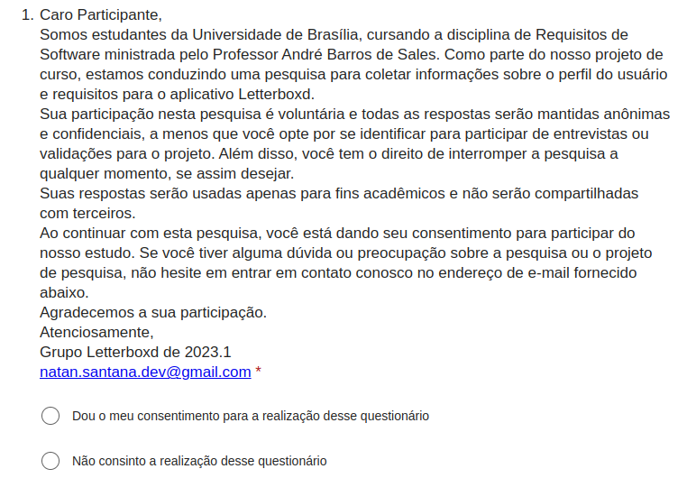
3.2 - Utilização do App
Dos 68 respondentes, somente 27 utilizam ou já utilizaram o aplicativo. Como o objetivo do formulário é definir o perfil dos usuários do Letterboxd, ao responder "não" a pessoa é redirecionada para o fim do formulário. Na figura 2 é possível observar o gráfico de respostas dessa pergunta:
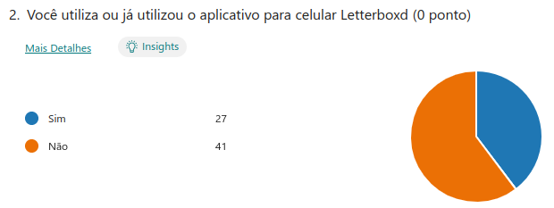
3.3 - Idade
É possível observar pelo gráfico apresentado na figura 3 que grande parte dos respondentes possuem uma idade entre 21-30 anos. A segunda maior parte possui de 16-20 anos.
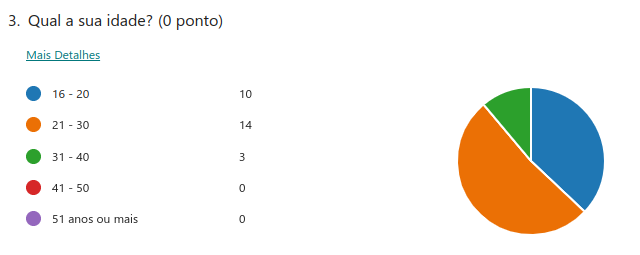
3.4 - Gênero
A maior parte dos respondentes desse formulário são homens, como é apresentado no gráfico da figura 4 abaixo.
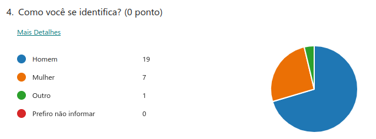
3.5 - Frequência do uso do aplicativo
A fim de descobrir a experiência do usuário quanto ao aplicativo, foi feito uma pergunta sobre a frequência de uso. As pessoas que utilizam o aplicativo com mais frequência conhecem mais sobre as funcionalidades e limitações do aplicativo do que as que usam ocasionalmente ou raramente. Sendo assim, a maioria dos respondentes deste formulário podem ser classificados como especialistas (Figura 5).
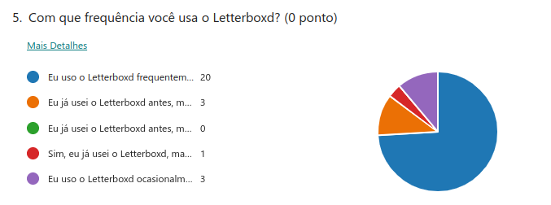
3.6 - Gostos pessoais
A fim de entender um pouco dos gostos pessoais do usuário com relação a filmes, foram feitas duas perguntas: qual o gênero de filme favorita, e se prefere assistir filmes em casa ou no cinema. O gênero favorito da maioria foi drama (Figura 6) e grande parte dos respondentes preferem assistir filmes no cinema (Figura 7). Essas informações serão úteis na construção das personas.
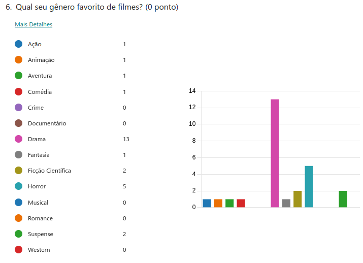
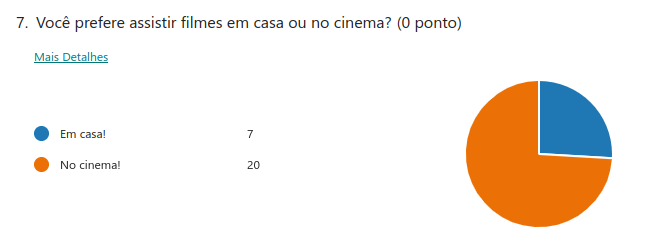
3.7 - Recursos utilizados
Na oitava pergunta foi listado os principais recursos que existem no aplicativo a fim de observar qual é o menos usado e que pode ser melhorada. De acordo com as respostas, as funcionalidades mais utilizadas e que podem ser consideradas como as atividades primárias são a de marcar filme assistido, registrar filmes já assistidos e adicionar filmes em listas. Já o recurso menos utilizado é o de ver artigos relacionados a filmes (Figura 8). As próximas duas perguntas possuem o objetivo de verificar se o propósito do aplicativo, uma rede social onde os usuário descobrem novos filmes e interagem entre si³, é cumprido. Quanto à interação de usuários, somente 33% dos respondentes (9 pessoas) interagem frequentemente ou diariamente com outros usuários (Figura 9) e quanto à descoberta de novos filmes, a grande maioria conheceu filmes que não tinham visto por causa das listas e recomendações (Figura 10).
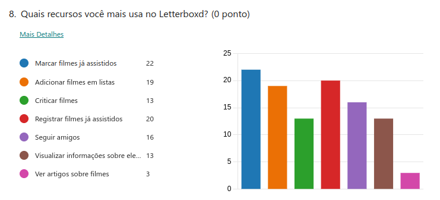
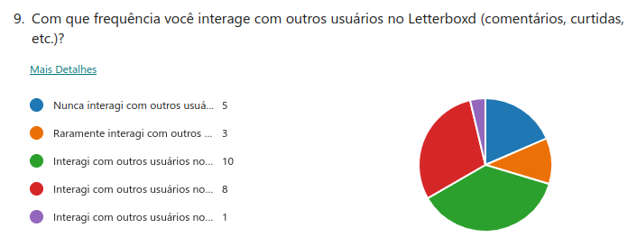
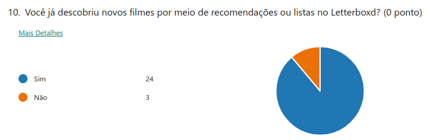
A fim de verificar o interesse dos usuários pela assinatura que a plataforma oferece, foi listado as funcionalidades exclusivas de um usuário "Pro" (Figura 11) e depois foi perguntando se essas funcionalidades eram suficientes para que se interessassem em se tornar usuários "Pro". A maioria dos respodentes se interessaram pelos benefícios do usuário "Pro", contudo uma parte significativa não achou que essas funcionalidades fossem suficientes para justificar uma assinatura (Figura 12).
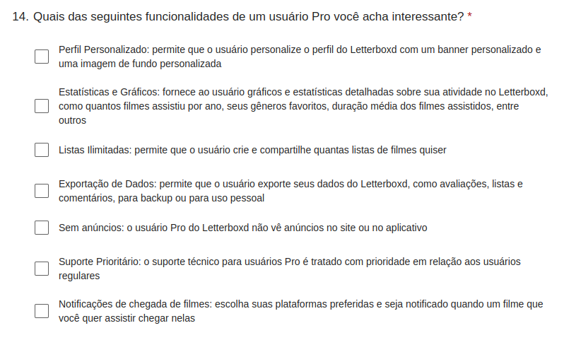
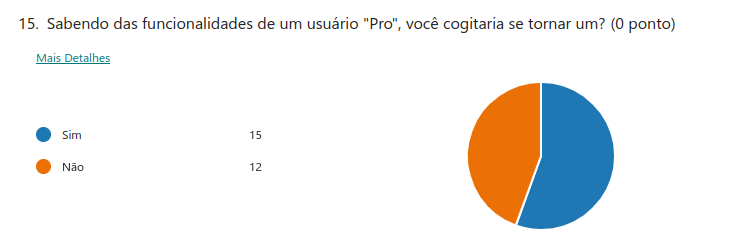
3.8 - Elicitação
A fim de elicitar novos requisitos foram feitas duas perguntas: uma para apontar problemas e limitações que o usuário encontrou durante o uso do aplicativo, e a outra sobre funcionalidades que os usuários gostariam que fossem adicionados. O seguintes problemas foram citados:
- Verificação de onde assistir o filme é limitado para os Estados Unidos
- Séries e animes aparecem no aplicativo sem uma categoria específica para eles, sendo listados como filmes
- Criação de listas pouco intuitiva e com muitos cliques
Pode-se observar que poucos problemas foram relatados e a maioria dos respondentes não encontraram problemas na utilização do aplicativo. Logo, infere-se que são usuários tecnófilos.
Os usuários que apontaram esses problemas fizeram sugestões de funcionalidades que poderiam resolver essas limitações, e outros usuários sugeriram algumas outras funcionalidades. A seguinte lista agrupa essas sugestões:
- Aba para visualizar listas curtidas, para ter fácil acesso à elas.
- Comentar críticas feitas por outros usuários
- Mover um filme de uma lista para outra
- Adicionar categorias para filmes, séries e animes
- Verificação de onde assistir o filme de acordo com o país do usuário
- Mandar mensagens para outros usuários
- Sugestão de amigos de acordo com gostos em comum
- Encontrar filmes em comum na "watchlist" de dois ou mais usuários
- Refatorar a criação de listas para diminuir a quantidade de cliques necessária e ficar mais intuitiva
- Sortear filme da watchlist
A sugestão 2, 6, 7 e 8 são funcionaliades que poderiam aumentar a interação entre usuários, aumentando o número de pessoas que interagem frequentemente ou diariamente com outros usuários. Nenhuma das sugestões feitas possuem relação com a funcionalidade de artigos sobre filmes, a funcionalidade menos utilizada de acordo com as respostas do questionário. Logo, foi feito algumas sugestões pelos membros do grupos:
- Notificar usuários sobre artigos de filmes que estiverem em suas listas
- Colocar artigos relacionados na tela de detalhes do filme
A fim de tornar o usuário "Pro" mais atraente, algumas dessas funcionalides sugeridas poderiam ser exclusivas para os assinantes da plataforma: como a sugestão 7 e 8. Além disso, os membros do grupo pensou em outra funcionalidade que poderia justificar uma assinatura:
- Sorteios de pôsteres assinados por elenco de filmes recentes
4 - Requisitos Elicitados
De acordo com a análise das respostas do usuário, é possível definir alguns novos requisitos que poderiam ser adicionados no aplicativo. A tabela 1 agrupa todos os requisitos descobertos pela análise do formulário, para identificar os requisitos será utilizado a abreviação QST (questionário) seguido de um número.
| Identificação | Descrição | Tipo do Requisito |
|---|---|---|
| QST01 | Aba para visualizar listas curtidas, para ter fácil acesso à elas. | RF |
| QST02 | Comentar críticas feitas por outros usuários | RF |
| QST03 | Mover um filme de uma lista para outra | RF |
| QST04 | Adicionar categorias para filmes, séries e animes | RF |
| QST05 | Verificação de onde assistir o filme de acordo com o país do usuário | RNF |
| QST06 | Mandar mensagens para outros usuários | RF |
| QST07 | Sugestão de amigos de acordo com gostos em comum, exclusivo para usuários "Pro" | RF |
| QST08 | Encontrar filmes em comum na "watchlist" de dois ou mais usuários, exclusivos para usuários "Pro" | RF |
| QST09 | Sorteios de pôsteres assinados por elenco de filmes recentes, exclusivo para usuários "Pro" | RF |
| QST10 | Notificar usuários sobre artigos de filmes que estiverem em suas listas | RF |
| QST11 | Colocar artigos relacionados na tela de detalhes do filme | RF |
| QST12 | Refatorar a criação de listas para diminuir a quantidade de cliques necessária e ficar mais intuitiva | RNF |
| QST13 | Sortear filme da watchlist | RF |
Tabela 1: requisitos elicitados (Fonte: autor, 2023)
5 - Referência Bibliográfica
- [1] Barbosa, S. D. J.; Silva, B. S. da; Silveira, M. S.; Gasparini, I.; Darin, T.; Barbosa, G. D. J. (2021) Interação Humano-Computador e Experiência do usuário. Autopublicação. ISBN: 978-65-00-19677-1.
- [2] CARLOS EDUARDO VAZQUEZ; GUILHERME SIQUEIRA SIMÕES. Engenharia de Requisitos. [s.l.] Brasport, 2016.
- [3] LETTERBOXD. What is Letterboxd?. Disponível em: https://letterboxd.com/about/. Acesso em: 22 abr. 2023.
6 - Tabela de Versionamento
| Data | Versão | Descrição | Autor | Revisor |
|---|---|---|---|---|
| 21/04/2023 | 1.0 |
Documentação do perfil de usuário e elicitação de requisitos por questionários | Natan Santana | Clara Ribeiro |
| 22/04/2023 | 2.0 |
Atualização das informações com novas respostas do formulário | Natan Santana | Clara Ribeiro |